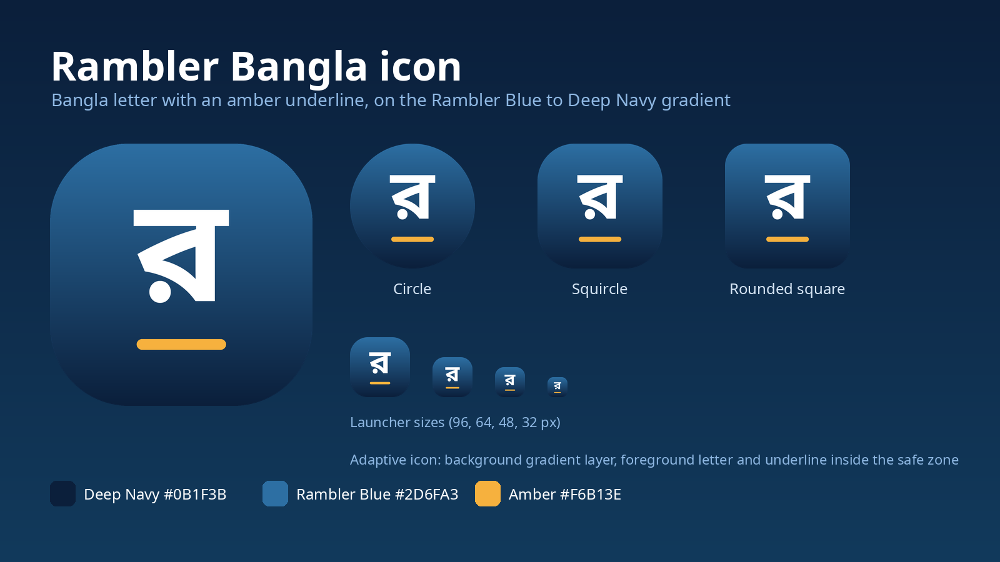

Dictate in Bangla.
Get Bangla.
A fail-closed, fingerprint-guarded patch layer that keeps Gboard 18.3.1 voice typing in Bengali script, and handles mixed Bangla and English one sentence at a time. Source only, GPL-3.0.
Stock voice cleanup
ami bhalo achi
With Rambler Bangla
আমি ভালো আছি
Illustration with synthetic text, not a device screenshot.What it is and why
Three parts, one job: Bangla dictation that stays in Bangla.
Gboard's on-device voice cleanup tends to rewrite Bengali dictation into Latin letters and mangles sentences that mix Bangla and English. Rambler Bangla fixes this for one exact build, Gboard 18.3.1: a fail-closed smali patcher (Python) proves it is looking at the profiled build and inserts two hooks, a pure-Java policy runtime keeps Bangla in Bengali script and picks one language per sentence, and a device-free CI suite builds a synthetic APK, patches it and checks every step, refusals included, on every push.
Honest status. A maintainer project with private test builds. Host tests and a static CI suite back the engineering claims. On-device results come from the maintainer's own phone. "Design intent" means design, not proof. CI never installs the keyboard on a device.
Features
What the project does today, with the evidence level stated for each.
Bangla stays Bangla
Bengali dictation stays in Bengali Unicode for bn-BD, bn-IN and bn-Beng; English stays in Latin.
CI + on device
17 end-to-end checks, 51 policy assertionsBangla and English together
One language per sentence on the multilingual layout (abc → বাংলা).
On device
292-case host corpus; a few misses in quick switchesReal Bangla spellings
English words inside Bangla come out as কোম্পানি, টেলিভিশন, বার্লিন. Transliteration only, never translation.
Host-tested
Blind check 85 of 200 exact (historical)Protected text
#hashtags, @handles, links, emails and times stay in Latin letters.
Host-tested
V29.3 test corpusSettings you control
Bangla script correction switch (on by default) and opt-in diagnostics (off by default).
Design intent
Not re-verified on a current deviceOwn package id
Installs beside the stock keyboard; updates signed with the same key install in place.
On device
See SIDE-BY-SIDE.md
How it works
The patcher never edits bytes by offset. It disassembles the APK and patches only once every check has passed.
Fingerprint guard
Every SHA-256 string hash in the profile must be found, both method anchors must match exactly, and the enabled-languages register is found by tracing dataflow.
Smali patch
Two hook calls go into the cleanup builder. The stock rule string stays as the fail-safe input. Only the touched DEX is rebuilt.
Policy runtime
Pure-Java
StringtoStringrules, dexed with d8 and added as an extra DEX. No Android or network dependencies.Verify
scripts/verify_apk.shchecks the output offline. The patcher never signs: you re-sign with your own key.
Any miss at step 1: FAIL-CLOSED ABORT, exit status 2, no output written. Full design in ARCHITECTURE.md.
Device-free CI
No phone, emulator or Google binary needed to prove the pipeline.
The fixture is a synthetic APK with zero Google content that mirrors the real anchors. On every push and pull request, GitHub Actions builds it from smali sources, patches it with the real patcher and asserts on the result.
- Python unit tests (stdlib only): the patcher's pure helpers, the loanword table sync, and checks that keep the README and this page honest.
- Static suite, 17 checks: 51 policy assertions, fixture build, end-to-end patch, fail-closed negatives (wrong fingerprint, tampered rule, re-patch each exit 2 with no APK), APK Signature Scheme v2 verification.
CI does not prove runtime behaviour inside real Gboard. Phone evidence is dated in VALIDATION.md.
Build from source
Linux x86_64, JDK 17+ (CI uses Temurin 21), Python 3, curl, unzip and zip. Target: Gboard 18.3.1.977415014 beta, version code 176004238, arm64-v8a. Any other build is refused.
# tests, then the pinned toolchain (SHA-256 checked)
python3 -m unittest discover -s tests/python -v
python3 -m pip install androguard==4.1.4
bash scripts/bootstrap_tools.sh && source tools/tool-env.sh
bash tests/run_tests.sh # TEST SUITE: 17 passed, 0 failed
# 1. fingerprint guard
python3 standalone-patcher/dex_patch.py analyze \
--apk gboard-18.3.1.apk --profile fingerprints/gboard-18.3.1.json
# 2-3. smali patch + policy runtime (exit 2, no output, on any miss)
python3 standalone-patcher/dex_patch.py patch \
--apk gboard-18.3.1.apk --out out.apk \
--profile fingerprints/gboard-18.3.1.json --extension-dex build/ext-dex/classes.dex
# 4. verify offline
scripts/verify_apk.sh single out.apk --profile fingerprints/gboard-18.3.1.jsonBuilding the runtime DEX, signing, installing and exit codes: README and user guide.
Safety: fail-closed by design
The patcher would rather do nothing than guess.
- Exact build or nothing. Any fingerprint, anchor or dataflow miss exits 2 and writes no APK.
- No double patching. An already patched APK is refused.
- Hash-only profile. No Google strings are reproduced.
- Never signs, never uploads. Patcher and verifier run offline; you sign with your own key.
- No network code in the patch layer, and diagnostics are off by default and stay on your phone.
- On-device path only. Bangla is not on Google's cloud rewrite list, so only the on-device cleanup path changes.
Which keyboard does what
Design intent for the V29.3 test build, unchanged in V29.4.
| Layout | Result |
|---|---|
| English (US) | English only. Rambler changes nothing. |
| বাংলা (native) | Bangla only. Romanized Bangla and English words become Bangla script. |
| abc → বাংলা | Multilingual. Each sentence is Bangla script or English, decided per sentence. |
| Bangla (Latin) | Treated as Bangla: output is Bangla script. |
Source only, no APKs
Now or later. Any site offering a "Rambler Bangla APK" is not from this project.
A patched keyboard contains Google's proprietary Gboard code, which is not licensed for redistribution. You apply the patch to a Gboard 18.3.1 APK you obtain yourself, for your own device, and sign it with your own key. Releases are tagged source plus notes.
Legal note. Rambler Bangla is an independent project. Not affiliated with Google, nor endorsed or sponsored by it. Gboard is a trademark of Google LLC, named only to identify the target app. The repository holds no Google binaries, keys, model files or verbatim strings. Modifying software may be restricted by its terms or by local law; checking that is your responsibility, and the software comes with no warranty (GPL-3.0). Details: LICENSING-AUDIT.md.
FAQ
Can I download a ready-made APK?
No. The project is source only; see above.
Why only Gboard 18.3.1?
The hooks go into obfuscated code whose names change between builds. Pinning one build and proving it with fingerprints is what makes the patch safe. A new version needs a new, reviewed profile.
What happens with a different version?
It refuses: FAIL-CLOSED ABORT, exit status 2, no output. Nothing is half-patched.
Does CI prove it works on my phone?
No. CI proves the patching pipeline on a synthetic APK, refusals included. Phone results come from the maintainer's device and are labelled as such.
Does it send my voice or text anywhere?
The patch layer has no network code. It only rewrites prompt and rule strings inside Gboard's existing on-device cleanup step. Gboard's own behaviour is outside this project's audit.
Does it translate English into Bangla?
No. English words spoken inside Bangla get a Bangla spelling; they are never translated.
Why do I need Linux?
The pinned aapt2 used to build the test fixture is the Linux build. The patcher itself is plain Python.
Bangla still came out in Latin letters. Is that Rambler?
Turn off Bangla script correction and try again. Same result means it is Gboard's own output. Otherwise, please open an issue with the layout you used.
Roadmap
Latest release: v29.4 (2026-10-18), a source release with a new maintainer signing key and no conversion changes. V29.4.1 (2026-10-21) refreshes the docs and this page.
Maintainer builds, October 2026
| Item | Level |
|---|---|
| Updates signed with the same key install over the existing app | Confirmed on the maintainer's phone |
| Gboard AI writing-tools icon visible again on build 253 | Confirmed on the maintainer's phone; cause not proven |
| Build 253 compatibility update (stale ids retargeted, no behaviour flags changed) | Two static reviews passed, no runtime proof |
| Stray "123" labels suppressed on pinned and list items | Static review only |
| Clipboard recents setting, masking default off | Static review only |
Next, not working yet
- Multilingual clause segmentation within a sentence.
- Phonetic typing with an EN/BN toggle, and a proper Bangla (Latin) layout.
- Clipboard drag-to-reorder, still in development.
- Better loanword accuracy than the historical 85 of 200 exact.
Links
- Source on GitHubREADME, issues and pull requests
- User guideVerify, patch, sign, install, exit codes
- ArchitecturePipeline, policy runtime and CI design
- All docsDesign, evidence, validation and licensing records
- ChangelogVersion history and build evidence levels
- ContributingRun the suites before a pull request; security reports via SECURITY.md
Icon and brand
The Bangla letter র with an amber underline on a Rambler Blue to Deep Navy gradient. Deep Navy #0B1F3B, Rambler Blue #2D6FA3, Amber #F6B13E.
